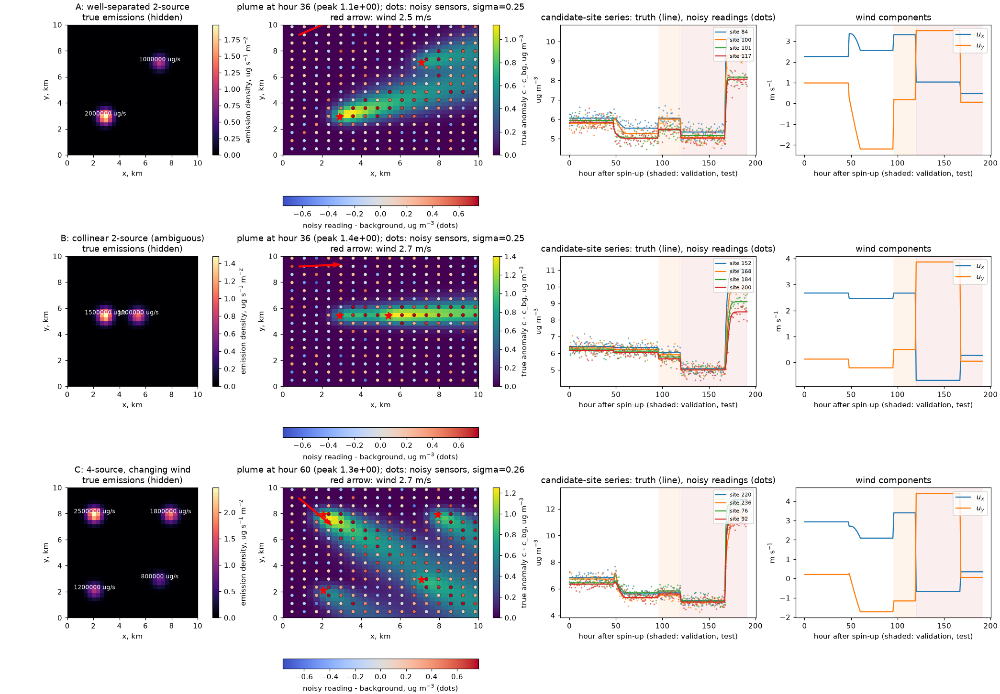

5 E02 Tiny local benchmark: three hand-placed examples
Question. Can we generate reproducible synthetic truth, sensors and splits without leakage, and do sensors see the plumes? Evidence label: verified engineering at smoke scale; benchmark not frozen as a scientific benchmark. Current status: rerun at a_ref = 1 g s⁻¹ (amendment A1); the 65 checks still pass and peak plume SNR is 21–32.
Simulated passive tracer only; nothing here is evidence about ambient PM2.5. Every number below is generated from tables/e02-checks.csv and tables/e02-splits.csv, written by scripts/e02_examples.py (one registered run). Scale is a smoke scale (32² grid, 12 h spin-up, 8-day calendar), not the preregistered 64² / 60-day design. Sources are placed by hand (the random draw is overridden); each example uses its own replicate seed because truth_id does not encode the fixed placement.
5.1 Examples

5.2 Split and manifest versioning
| scenario | truth_id | schema_version | config_hash | git_sha | truth_seed | noise_seed | split | days | n_hours | wind_regimes | fitting_allowed | evaluation_allowed |
|---|---|---|---|---|---|---|---|---|---|---|---|---|
| separated2 | TRUTH-31d2662fa14d | 1 | ac3db6150354 | fe1cf2b54d | 1000 | 2000 | train | 1-4 | 96 | steady_westerly | veering | True |
| separated2 | TRUTH-31d2662fa14d | 1 | ac3db6150354 | fe1cf2b54d | 1000 | 2000 | validation | 5-5 | 24 | steady_westerly | True | False |
| separated2 | TRUTH-31d2662fa14d | 1 | ac3db6150354 | fe1cf2b54d | 1000 | 2000 | test | 6-8 | 72 | steady_southerly | stagnation_then_front | False |
| collinear2 | TRUTH-44e780feac05 | 1 | ec4f2f1be7b8 | fe1cf2b54d | 1001 | 2001 | train | 1-4 | 96 | steady_westerly | steady_westerly | True |
| collinear2 | TRUTH-44e780feac05 | 1 | ec4f2f1be7b8 | fe1cf2b54d | 1001 | 2001 | validation | 5-5 | 24 | steady_westerly | True | False |
| collinear2 | TRUTH-44e780feac05 | 1 | ec4f2f1be7b8 | fe1cf2b54d | 1001 | 2001 | test | 6-8 | 72 | steady_southerly | stagnation_then_front | False |
| changing4 | TRUTH-2058de57d7ee | 1 | ac3db6150354 | fe1cf2b54d | 1002 | 2002 | train | 1-4 | 96 | steady_westerly | veering | True |
| changing4 | TRUTH-2058de57d7ee | 1 | ac3db6150354 | fe1cf2b54d | 1002 | 2002 | validation | 5-5 | 24 | steady_westerly | True | False |
| changing4 | TRUTH-2058de57d7ee | 1 | ac3db6150354 | fe1cf2b54d | 1002 | 2002 | test | 6-8 | 72 | steady_southerly | stagnation_then_front | False |
5.3 Validity checks (pass/fail)
56 of 56 gated checks passed.
| scenario | check | value | passed |
|---|---|---|---|
| separated2 | source rate integral matches sum(a) (rel err) | 0.00e+00 | True |
| separated2 | anomaly never negative (min, ug m^-3) | 0.00e+00 | True |
| separated2 | mass-budget outflow fraction in [0,1] (residual) | 0.922 | True |
| separated2 | train placement allowed | ok | True |
| separated2 | validation tuning allowed | ok | True |
| separated2 | test evaluation allowed | ok | True |
| separated2 | test placement refused | ok | True |
| separated2 | test tuning refused | ok | True |
| separated2 | validation evaluation refused | ok | True |
| separated2 | held-out wind in fitting refused | ok | True |
| separated2 | inadmissible site refused | ok | True |
| separated2 | too-close sites refused | ok | True |
| separated2 | train/val/test hours disjoint | ok | True |
| separated2 | train winds exclude held-out regimes | ok | True |
| separated2 | view arrays read-only | ok | True |
| separated2 | view exposes no truth/strength fields | ok | True |
| separated2 | identical truth and shared-site noise across two designs | True | True |
| collinear2 | source rate integral matches sum(a) (rel err) | 1.86e-16 | True |
| collinear2 | anomaly never negative (min, ug m^-3) | 0.00e+00 | True |
| collinear2 | mass-budget outflow fraction in [0,1] (residual) | 0.892 | True |
| collinear2 | train placement allowed | ok | True |
| collinear2 | validation tuning allowed | ok | True |
| collinear2 | test evaluation allowed | ok | True |
| collinear2 | test placement refused | ok | True |
| collinear2 | test tuning refused | ok | True |
| collinear2 | validation evaluation refused | ok | True |
| collinear2 | held-out wind in fitting refused | ok | True |
| collinear2 | inadmissible site refused | ok | True |
| collinear2 | too-close sites refused | ok | True |
| collinear2 | train/val/test hours disjoint | ok | True |
| collinear2 | train winds exclude held-out regimes | ok | True |
| collinear2 | view arrays read-only | ok | True |
| collinear2 | view exposes no truth/strength fields | ok | True |
| collinear2 | identical truth and shared-site noise across two designs | True | True |
| changing4 | source rate integral matches sum(a) (rel err) | 0.00e+00 | True |
| changing4 | anomaly never negative (min, ug m^-3) | 0.00e+00 | True |
| changing4 | mass-budget outflow fraction in [0,1] (residual) | 0.919 | True |
| changing4 | train placement allowed | ok | True |
| changing4 | validation tuning allowed | ok | True |
| changing4 | test evaluation allowed | ok | True |
| changing4 | test placement refused | ok | True |
| changing4 | test tuning refused | ok | True |
| changing4 | validation evaluation refused | ok | True |
| changing4 | held-out wind in fitting refused | ok | True |
| changing4 | inadmissible site refused | ok | True |
| changing4 | too-close sites refused | ok | True |
| changing4 | train/val/test hours disjoint | ok | True |
| changing4 | train winds exclude held-out regimes | ok | True |
| changing4 | view arrays read-only | ok | True |
| changing4 | view exposes no truth/strength fields | ok | True |
| changing4 | identical truth and shared-site noise across two designs | True | True |
| all | config JSON round-trip keeps hash | ok | True |
| all | truth_id stable under reload | ok | True |
| all | truth_id changes when physics config changes | ok | True |
| all | schema_version recorded | ok | True |
| all | three distinct truth_ids | 3 | True |
The checks cover source-rate/unit consistency, a mass-budget residual, positivity, leakage refusals (test data for placement/tuning, non-test data for evaluation, held-out wind in fitting, inadmissible or too-close sites), read-only inference views without truth fields, and identical truth and shared-site noise across two different sensor designs. The mass budget is a residual: the outflow is inferred as emitted − removed − stored change, with removal from an hourly trapezoid, so it checks plausibility (0 ≤ outflow ≤ emitted), not closure.
5.4 Signal against noise
| scenario | check | value |
|---|---|---|
| separated2 | peak plume anomaly over background (ug m^-3) | 5.32e+00 |
| separated2 | instrument noise sigma (ug m^-3) | 0.250 |
| separated2 | SNR = peak anomaly / noise sigma (NEGATIVE RESULT if << 1) | 2.13e+01 |
| collinear2 | peak plume anomaly over background (ug m^-3) | 6.47e+00 |
| collinear2 | instrument noise sigma (ug m^-3) | 0.250 |
| collinear2 | SNR = peak anomaly / noise sigma (NEGATIVE RESULT if << 1) | 2.59e+01 |
| changing4 | peak plume anomaly over background (ug m^-3) | 8.14e+00 |
| changing4 | instrument noise sigma (ug m^-3) | 0.255 |
| changing4 | SNR = peak anomaly / noise sigma (NEGATIVE RESULT if << 1) | 3.19e+01 |
At the originally preregistered reference rate (a_ref = 100 µg s⁻¹) the plume anomaly was about 10⁻³ of the instrument noise, and sensor readings carried no visible plume (negative result, kept in Git history at revision a36b476^). Following amendment A1 (state/decisions/2026-11-12-source-scale.md, a_ref = 1 g s⁻¹, everything else unchanged) the peak plume anomaly in these examples is the multiple of σ shown above. The noise σ barely changes because it is set at 5% of the median training concentration, which is dominated by the 5 µg m⁻³ background. The new scale was chosen after seeing the old results, so analyses that use it are exploratory until the protocol is frozen.
5.5 Audit outcome (gate-02)
Gate-02 conditionally cleared the smoke-scale pipeline as engineering (41 benchmark tests re-run; operator, truth vs forcing and leakage refusals checked) and did not clear freezing benchmark-v1 as a scientific benchmark. Its first decision for the human was the SNR problem (B1): at the preregistered scale the peak anomaly was ~1e-3 of σ, so “until decided, no E03 or placement result is interpretable”. That decision became amendment A1. Other open items (separate tuning/evaluation seeds, mismatch magnitudes, windowing, version constants in the hashed config) were partly absorbed by the protocol approval; the spin-up wind choice remains an unreviewed decision (E02 journal).
5.6 Limitations
- Perfect-model truth only; no imperfect-wind or mismatched-model variants; single replicate per example.
- Small grid and short calendar; held-out wind regimes appear only in the test days.
- Collinearity ambiguity is set up geometrically but not quantified here (no response matrix or inverse); that belongs to the static-inverse experiment.
- Mass check is a residual, not an independent closure; positivity is exactly zero minimum anomaly by construction of the anomaly solve.
- Generator workaround from the truth-generator implementation (solving the anomaly with zero background) is inherited.